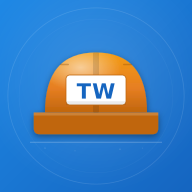

Aktuell keine Internet-Verbindung.
Sobald wieder Empfang da ist, laedt die App automatisch die neueste Version. Deine bereits aufgenommenen Fotos und Stundenzettel bleiben sicher gespeichert und werden beim naechsten Online-Gehen synchronisiert.